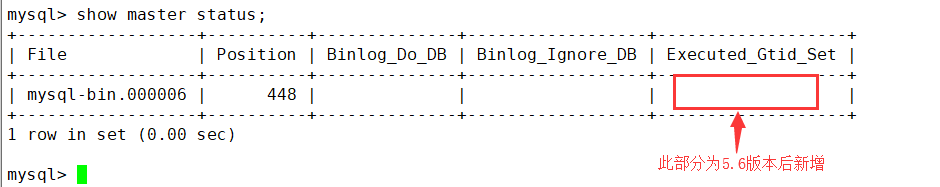
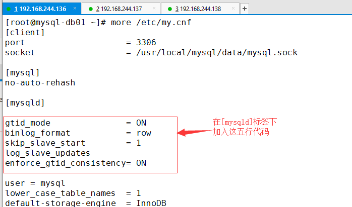

4.配置基于GTID的主从复制
4.1 先决条件
- 主库和从库都要开启binlog
- 主库和从库server-id不同
- 要有主从复制用户
4.2 主库操作（mysql-db01）
4.2.1 修改配置文件
#修改主库配置文件/etc/my.cnf
[root@mysql-db01 mysql]# cat /etc/my.cnf
[client]
socket = /usr/local/mysql/data/mysql.sock
[mysqld]
lower_case_table_names = 1
default-storage-engine = InnoDB
port = 3306
datadir = /usr/local/mysql/data
character-set-server = utf8
socket = /usr/local/mysql/data/mysql.sock
log_bin = mysql-bin #开启binlog日志
server_id = 1 #设置server_id
innodb_buffer_pool_size = 200M
slave-parallel-workers = 8
thread_cache_size = 600
back_log = 600
slave_net_timeout = 60
max_binlog_size = 512M
key_buffer_size = 8M
query_cache_size = 64M
join_buffer_size = 2M
sort_buffer_size = 2M
query_cache_type = 1
thread_stack = 192K
#重启动MySQL服务
[root@mysql-db01 mysql]# /etc/init.d/mysqld restart
Shutting down MySQL.. SUCCESS!
Starting MySQL. SUCCESS!
4.2.2 登陆MySQL删除不必要的用户并创建主从复制用户
1）删除不必要的用户
mysql> select user,host from mysql.user;
+------+------------+
| user | host |
+------+------------+
| root | 127.0.0.1 |
| root | ::1 |
| | localhost |
| root | localhost |
| | mysql-db01 |
| root | mysql-db01 |
+------+------------+
6 rows in set (0.00 sec)
mysql> drop user root@'127.0.0.1';
Query OK, 0 rows affected (0.00 sec)
mysql> drop user root@'::1';
Query OK, 0 rows affected (0.00 sec)
mysql> drop user ' '@'localhost';Query OK, 0 rows affected (0.00 sec)mysql> drop user ' '@'mysql-db01';
Query OK, 0 rows affected (0.00 sec)
mysql> select user,host from mysql.user;
+------+------------+
| user | host |
+------+------------+
| root | localhost |
| root | mysql-db01 |
+------+------------+
2 rows in set (0.00 sec)
2）创建主从复制用户
mysql> grant replication slave on *.* to rep@'192.168.0.%' identified by '123123';
Query OK, 0 rows affected (0.00 sec)
mysql> select user,host from mysql.user;
+------+-------------+
| user | host |
+------+-------------+
| rep | 192.168.0.% |
| root | localhost |
| root | mysql-db01 |
+------+-------------+
3 rows in set (0.00 sec)
mysql> show grants for rep@'192.168.0.%';
+--------------------------------------------------------------------------------------------------------------------------+
| Grants for rep@192.168.0.% |
+--------------------------------------------------------------------------------------------------------------------------+
| GRANT REPLICATION SLAVE ON *.* TO 'rep'@'192.168.0.%' IDENTIFIED BY PASSWORD '*E56A114692FE0DE073F9A1DD68A00EEB9703F3F1' |
+--------------------------------------------------------------------------------------------------------------------------+
1 row in set (0.00 sec)
4.3 从库操作(mysql-db02和mysql-db03)
4.3.1 修改配置文件
#修改mysql-db02配置文件(和mysql-db01配置文件一致)
#只需要修改server-id = 5选项
[root@mysql-db02 ~]# cat /etc/my.cnf
[client]
socket = /usr/local/mysql/data/mysql.sock
[mysqld]
lower_case_table_names = 1
default-storage-engine = InnoDB
port = 3306
datadir = /usr/local/mysql/data
character-set-server = utf8
socket = /usr/local/mysql/data/mysql.sock
log_bin = mysql-bin #从binlog也要打开
server_id = 5 #仅需修改此项
innodb_buffer_pool_size = 200M
slave-parallel-workers = 8
thread_cache_size = 600
back_log = 600
slave_net_timeout = 60
max_binlog_size = 512M
key_buffer_size = 8M
query_cache_size = 64M
join_buffer_size = 2M
sort_buffer_size = 2M
query_cache_type = 1
thread_stack = 192K
[root@mysql-db02 ~]# /etc/init.d/mysqld restart #重启mysql
Shutting down MySQL.. SUCCESS!
Starting MySQL. SUCCESS!
#修改mysql-db03配置文件(和mysql-db01配置文件一致)
#只需要修改server-id = 10选项
[root@mysql-db03 ~]# cat /etc/my.cnf
[client]
socket = /usr/local/mysql/data/mysql.sock
[mysqld]
lower_case_table_names = 1
default-storage-engine = InnoDB
port = 3306
datadir = /usr/local/mysql/data
character-set-server = utf8
socket = /usr/local/mysql/data/mysql.sock
log_bin = mysql-bin #从binlog也要打开
server_id = 10 #只需修改此项
innodb_buffer_pool_size = 200M
slave-parallel-workers = 8
thread_cache_size = 600
back_log = 600
slave_net_timeout = 60
max_binlog_size = 512M
key_buffer_size = 8M
query_cache_size = 64M
join_buffer_size = 2M
sort_buffer_size = 2M
query_cache_type = 1
thread_stack = 192K
[root@mysql-db03 ~]# /etc/init.d/mysqld restart #重启mysql
Shutting down MySQL.. SUCCESS!
Starting MySQL. SUCCESS!
特别提示： 在以往如果是基于binlog日志的主从复制，则必须要记住主库的master状态信息。

但是在MySQL5.6版本里多了一个Gtid的功能，可以自动记录主从复制位置点的信息，并在日志中输出出来。
4.4 开启GTID
#没开启之前先看一下GTID状态
mysql> show global variables like '%gtid%';
+--------------------------+-------+
| Variable_name | Value |
+--------------------------+-------+
| enforce_gtid_consistency | OFF |
| gtid_executed | |
| gtid_mode | OFF |
| gtid_owned | |
| gtid_purged | |
+--------------------------+-------+
5 rows in set (0.00 sec)
编辑mysql配置文件（主库从库都需要修改）

mysql-db01,mysql-db02,mysql-db03都需要加入上图的上行代码
修改完配置文件以后重启动数据库
[root@mysql-db01 ~]# /etc/init.d/mysqld restart
Shutting down MySQL.. SUCCESS!
Starting MySQL. SUCCESS!
[root@mysql-db02 ~]# /etc/init.d/mysqld restart
Shutting down MySQL.. SUCCESS!
Starting MySQL. SUCCESS!
[root@mysql-db03 ~]# /etc/init.d/mysqld restart
Shutting down MySQL.. SUCCESS!
Starting MySQL. SUCCESS!
再次查看GTID状态
[root@mysql-db01 ~]# mysql -uroot -p123123
Warning: Using a password on the command line interface can be insecure.
Welcome to the MySQL monitor. Commands end with ; or \g.
Your MySQL connection id is 1
Server version: 5.6.17-log MySQL Community Server (GPL)
Copyright (c) 2000, 2014, Oracle and/or its affiliates. All rights reserved.
Oracle is a registered trademark of Oracle Corporation and/or itsaffiliates. Other names may be trademarks of their respectiveowners.
Type 'help;' or '\h' for help. Type '\c' to clear the current input statement.
mysql> show global variables like '%gtid%';
+--------------------------+-------+
| Variable_name | Value |
+--------------------------+-------+
| enforce_gtid_consistency | ON | #执行GTID一致
| gtid_executed | |
| gtid_mode | ON | #开启GTID模块
| gtid_owned | |
| gtid_purged | |
+--------------------------+-------+
5 rows in set (0.00 sec)
mysql>
再次提示： 主库从库都必须要开启GTID，否则在做主从复制的时候就会报错.
4.5 配置主从复制(mysql-db02,mysql-db03)
mysql> change master to \
-> master_host='192.168.0.51',\ #主库IP
-> master_user='rep',\ #主库复制用户
-> master_password='123123',\ #主库复制用密码
-> master_auto_position=1; #GTID位置点（自动追踪需要同步的position）
Query OK, 0 rows affected, 2 warnings (0.00 sec)
4.6 开启从库的主从复制功能（mysql-db02,mysql-db03）
mysql> start slave; #开启主从同步功能
Query OK, 0 rows affected, 1 warning (0.01 sec)
mysql> show slave status\G
*************************** 1. row ***************************
Slave_IO_State: Waiting for master to send event
Master_Host: 192.168.0.51
Master_User: rep
Master_Port: 3306
Connect_Retry: 60
Master_Log_File: mysql-bin.000003
Read_Master_Log_Pos: 151
Relay_Log_File: mysql-db02-relay-bin.000002
Relay_Log_Pos: 361
Relay_Master_Log_File: mysql-bin.000003
Slave_IO_Running: Yes #此项yes代表成功
Slave_SQL_Running: Yes #此项yes代表成功
Replicate_Do_DB:
Replicate_Ignore_DB:
Replicate_Do_Table:
Replicate_Ignore_Table:
#....以下省略若干行....
两个从库mysql-db02和mysql-db03都执行以上步骤。
4.7 什么是GTID
- GTID（Global Transaction）全局事务标识符：是一个唯一的标识符，它创建并与源服务器（主）上提交的每个事务相关联。此标识符不仅对其发起的服务器是唯一的，而且在给定复制设置中的所有服务器上都是唯一的。所有交易和所有GTID之间都有1对1的映射。
- GTID实际上是由UUID+TID组成的。其中UUID是一个MySQL实例的唯一标识。TID代表了该实例上已经提交的事务数量，并且随着事务提交单调递增。
- 下面是一个GTID的具体形式：
3E11FA47-71CA-11E1-9E33-C80AA9429562:23
4.8 GTID的新特性
（1）支持多线程复制：事实上是针对每个database开启相应的独立线程，即每个库有一个单独的（sql thread）；
（2）支持启用GTID，在配置主从复制，传统的方式里，你需要找到binlog和POS点，然后change master to 指向。在mysql5.6里，无须再知道binlog和POS点，只需要知道master的IP/端口/账号密码即可，因为同步复制是自动的，MySQL通过内部机制GTID自动找点同步；
（3）基于Row复制只保存改变的列，大大节省磁盘空间，网络，内存等；
（4）支持把Master和Slave的相关信息记录在Table中；原来是记录在文件里，现在则记录在表里，增强可用性；
（5）支持延迟复制。
4.9 开启方法
#mysql配置文件：
[mysqld]
gtid_mode=O
Nenforce_gtid_consistency
#查看
show global variables like ‘%gtid%’；
4.10 从库设置（mysql-db02,mysql-db03）
#登陆从库
[root@mysql-db02 ~]# mysql -uroot -p123123
#临时禁用自动删除relay log功能
mysql> set global relay_log_purge = 0;
Query OK, 0 rows affected (0.00 sec)
#设置只读
mysql> set global read_only=1;
Query OK, 0 rows affected (0.00 sec)
编辑配置文件/etc/my.cnf
修改完配置文件，别忘了重启动mysql服务
root@mysql-db02 ~]# /etc/init.d/mysqld restart
Shutting down MySQL.. SUCCESS!
Starting MySQL. SUCCESS!
[root@mysql-db03 ~]# /etc/init.d/mysqld restart
Shutting down MySQL.. SUCCESS!
Starting MySQL. SUCCESS!